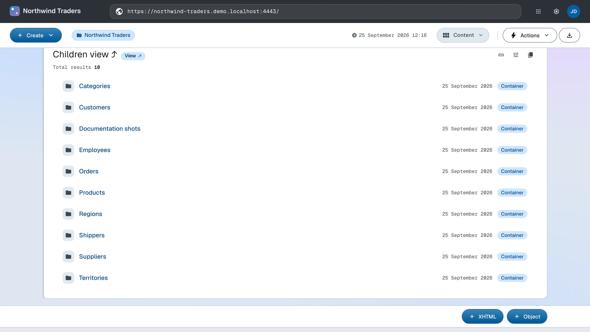

Structure
Lay out the document hierarchy that will hold your data
Documents come in two kinds: containers, which hold child documents, and items. Northwind's domain gives you the container layout directly — one container per entity type (order line items live inside their order documents):
https://localhost:4443/ ├── categories/ ├── customers/ ├── employees/ ├── orders/ ├── products/ ├── regions/ ├── shippers/ ├── suppliers/ └── territories/
On the root document, click the Create dropdown and select Container. Enter Categories as the title, replace the generated relative URI with categories using the dropdown in the top-right corner of the form, and save. The Create documents guide walks through the form in detail.
A container is just a document whose description says it is one. categories.ttl:
@prefix dh: <https://w3id.org/atomgraph/linkeddatahub/document-hierarchy#> .
@prefix dct: <http://purl.org/dc/terms/> .
<> a dh:Container ;
dct:title "Categories" .
PUT it to the container URL, the same way the root document was updated:
ldh put "${LDH_BASE}categories/" categories.ttl
Repeat for the remaining eight containers — or skip to App as a repository, where one command replays a whole folder.
What you now see
The root document now lists the containers as its children, and each container URL resolves to an (empty) listing page. The URL space of your app is its information architecture.

How this works
- Document hierarchy — how containers and items nest into the URL space
Next: Model